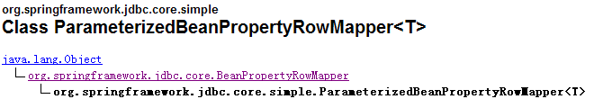
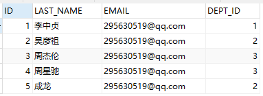
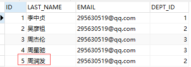
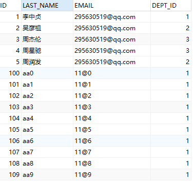
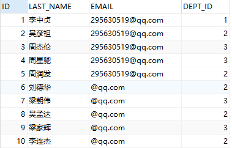

一、JdbcTemplate 简介
为了使 JDBC 更加易于使用, Spring 在 JDBC API 上定义了一个抽象层, 以此建立一个 JDBC 存取框架.
作为 Spring JDBC 框架的核心, JDBC 模板的设计目的是为不同类型的 JDBC 操作提供模板方法. 每个模板方法都能控制整个过程, 并允许覆盖过程中的特定任务. 通过这种方式, 可以在尽可能保留灵活性的情况下, 将数据库存取的工作量降到最低.
1.使用 JdbcTemplate 更新数据库
1.1用 sql 语句和参数更新数据库:
1 2
| // update public int update(String sql, Object... args) throws DataAccessException
|
1.2批量更新数据库:
1 2
| // batchUpdate public int[] batchUpdate(String sql, List<Object[]> batchArgs)
|
2.使用 JdbcTemplate 查询数据库
2.1 查询单行:
1 2
| // queryForObject public <T> queryForObject(String sql, ParameterizedRowMapper<T> rm, Object... args) throws DataAccessException
|
2.2 便利的 BeanPropertyRowMapper 实现

2.3 查询多行:
1 2
| // query public <T> List<T> query(String sql, ParameterizedRowMapper<T> rm, Object... args) throws DataAccessException
|
2.4 单值查询:
1 2
| // queryForObject public <T> T queryForObject(String sql, Class<T> requiredType, Object... args) throws DataAccessException
|
2.5 小练习：
重开一个项目,导包，src下建 com.springjdbc 包(包内建JDBCTest.java),applicationContext.xml,db.properties,本地数据库打开，新建 springstudy 数据库,内部建张表 employees.
注意：视频里老师用的是List<Object[]> batchArgs = new ArrayList<>();的形式非常简洁,最后他直接jdbcTemplate.batchUpdate(sql,batchArgs);,这里他的 batchUpdate是batchUpdate(String sql, List<Object[]> batchArgs) 类型的，而我本地并没有这个类型，所以没法用他的这种写法。
后来经过与公司java同事探讨,怀疑是不是jar包版本问题,因为他电脑上也可以。而他用的是spring-jdbc-3.2.3,将我的spring-jdbc-3.0.2替换掉，果然能用了。跨行要踩得坑真多。。。
employees表:

db.properties:
1 2 3 4 5 6
| jdbc.user=root jdbc.password=123456 jdbc.driverClass=com.mysql.jdbc.Driver jdbc.jdbcUrl=jdbc:mysql://localhost:3306/springstudy?useUnicode=true&characterEncoding=utf-8&useSSL=false jdbc.initPoolSize=5 jdbc.maxPoolSize=10
|
applicationContext.xml:
1 2 3 4 5 6 7 8 9 10 11 12 13 14 15
| <!-- 导入资源文件 --> <context:property-placeholder location="classpath:db.properties" /> <!-- 配置C3P0数据源 --> <bean id="dataSource" class="com.mchange.v2.c3p0.ComboPooledDataSource"> <property name="user" value="${jdbc.user}"></property> <property name="password" value="${jdbc.password}"></property> <property name="jdbcUrl" value="${jdbc.jdbcUrl}"></property> <property name="driverClass" value="${jdbc.driverClass}"></property> <!-- <property name="initPoolSize" value="${jdbc.initPoolSize}"></property> <property name="maxPoolSize" value="${jdbc.maxPoolSize}"></property>--> </bean> <!-- 配置spring的JdbcTemplate --> <bean id="jdbcTemplate" class="org.springframework.jdbc.core.JdbcTemplate"> <property name="dataSource" ref="dataSource" /> </bean>
|
JDBCTest.java:
1 2 3 4 5 6 7 8 9 10 11 12 13 14 15 16 17 18 19 20 21 22 23 24 25 26 27 28 29 30 31 32 33 34 35 36 37 38 39 40 41 42 43 44 45 46 47 48 49 50 51 52 53 54 55 56 57
| public class JDBCTest { private ApplicationContext ctx = null; private JdbcTemplate jdbcTemplate; { ctx = new ClassPathXmlApplicationContext("applicationContext.xml"); jdbcTemplate = (JdbcTemplate) ctx.getBean("jdbcTemplate"); } @Test public void testDataSource() throws SQLException { DataSource dataSource = ctx.getBean(DataSource.class); System.out.println(dataSource.getConnection()); } /* * 执行INSERT,UPDATE,DELETE */ // @Test // public void testUpdate() { // String sql = "UPDATE employees SET last_name = ? WHERE id = ?"; // jdbcTemplate.update(sql, "周润发", 5); // } /* * 执行批量更新：批量的INSERT, UPDATE, DELETE * 最后一个参数是Object[] 的List类型：因为修改一条记录需要一个 Object 数组，那么多条不就需要多个 Object 数组吗？ */ @Test public void testBatchUpdate() { String sql = "INSERT INTO employees(id,last_name, email, dept_id) VALUES(?,?,?,?)"; List<String> dataSetName = new ArrayList<>(); List<String> dataSetEmail = new ArrayList<>(); List<Integer> dataSetDeptId = new ArrayList<>(); for(int i = 0; i<10;i++){ dataSetName.add("aa"+i); dataSetEmail.add("11@"+i); dataSetDeptId.add(1); } BatchPreparedStatementSetter batchArgs = new BatchPreparedStatementSetter(){ @Override public int getBatchSize() { // TODO Auto-generated method stub return dataSetName.size(); } @Override public void setValues(PreparedStatement ps, int i) throws SQLException { // TODO Auto-generated method stub try{ ps.setObject(1, i+100); ps.setObject(2, dataSetName.get(i)); ps.setObject(3, dataSetEmail.get(i)); ps.setObject(4, dataSetDeptId.get(i)); } catch(Exception e){ e.printStackTrace(); } } }; jdbcTemplate.batchUpdate(sql,batchArgs); } }
|
上面的代码我跑了一次，数据库也插入数据了，当我继续跑的时候报错了，报错原因是:数据库设置了索引，而插入的值不唯一。如果想继续插入，要改数据。


既然知道包比较老，新版本有新方法，想着试一试吧。把lib里面的老版本的jdbc包删了，把3.2.3版本的弄进来并且 add path 进去，结果直接报ClassNotFoundException,启动时直接提醒有错，可是看了代码界面并没有报错的提示，纠结了起码半小时，百度了下发现人家也有遇到过文件在却还是报这种错，打开一看，原来是tomcat下的包没有删，我一想，我擦，我只是把lib下的包删了，但是build path下面的没动啊，点进去一看，果然是这个错。3.0版本的已经删了，但是build path下面还有，这当然找不到啊，遂删之，跑了起来。
1 2 3 4 5 6 7 8 9 10 11 12 13 14
| /* * 换成spring-jdbc-3.2.3版本的包,使用batchUpdate(String sql, List<Object[]> batchArgs) 类型 */ @Test public void testBatchUpdate() { String sql = "INSERT INTO employees(id,last_name, email, dept_id) VALUES(?,?,?,?)"; List<Object[]> batchArgs = new ArrayList<>(); batchArgs.add(new Object[]{6, "刘德华", "@qq.com", 2}); batchArgs.add(new Object[]{7, "梁朝伟", "@qq.com", 3}); batchArgs.add(new Object[]{8, "吴孟达", "@qq.com", 2}); batchArgs.add(new Object[]{9, "梁家辉", "@qq.com", 3}); batchArgs.add(new Object[]{10, "李连杰", "@qq.com", 2}); jdbcTemplate.batchUpdate(sql, batchArgs); }
|

2.6 从数据库中获取一条记录，实际得到对应的一个对象
1 2 3 4 5 6 7
| @Test public void testQueryForObject() { String sql = "SELECT id, last_name lastName, email FROM employees WHERE id = ?"; RowMapper<Employee> rowMapper = new BeanPropertyRowMapper<>(Employee.class) ; Employee employee = jdbcTemplate.queryForObject(sql, rowMapper, 1); System.out.println(employee); }
|
注意：不是调用 queryForObject(String sql, Class requiredType, Object… args) 方法
上面的 Class requiredType 代表指定的类型比如 id
这里应该调用 queryForObject(String sql, RowMapper rowMapper, Object… args) 方法
- 1.其中的 RowMapper 指定如何去映射结果集的行，常用的实现类为 BeanPropertyRowMapper
- 2.使用 SQL 中列的别名完成列名和类的属性名的映射，例如 last_name lastName
- 3.不支持级联属性，JdbcTemplate 到底是一个 JDBC 小工具，而不是 ORM 框架
2.7 查到实体类的集合
1 2 3 4 5 6 7 8
| @Test public void testQueryForList() { String sql = "SELECT id, last_name lastName, email FROM employees WHERE id > ?"; RowMapper<Employee> rowMapper = new BeanPropertyRowMapper<>(Employee.class); List<Employee> employees = jdbcTemplate.query(sql, rowMapper, 5); System.out.println(employees); }
|
2.8 获取单个列的值，或做统计查询
使用 queryForObject(String sql, Class requiredType) 方法
1 2 3 4 5 6
| @Test public void testQueryForObject2() { String sql = "SELECT count(id) from employees"; long count = jdbcTemplate.queryForObject(sql, Long.class); System.out.println(count); }
|
3.简化 JDBC 模板查询
每次使用都创建一个 JdbcTemplate 的新实例, 这种做法效率很低下.
JdbcTemplate 类被设计成为线程安全的, 所以可以在 IOC 容器中声明它的单个实例, 并将这个实例注入到所有的 DAO 实例中.
JdbcTemplate 也利用了 Java 1.5 的特定(自动装箱, 泛型, 可变长度等)来简化开发
Spring JDBC 框架还提供了一个 JdbcDaoSupport 类来简化 DAO 实现. 该类声明了 jdbcTemplate 属性, 它可以从 IOC 容器中注入, 或者自动从数据源中创建.(不推荐)